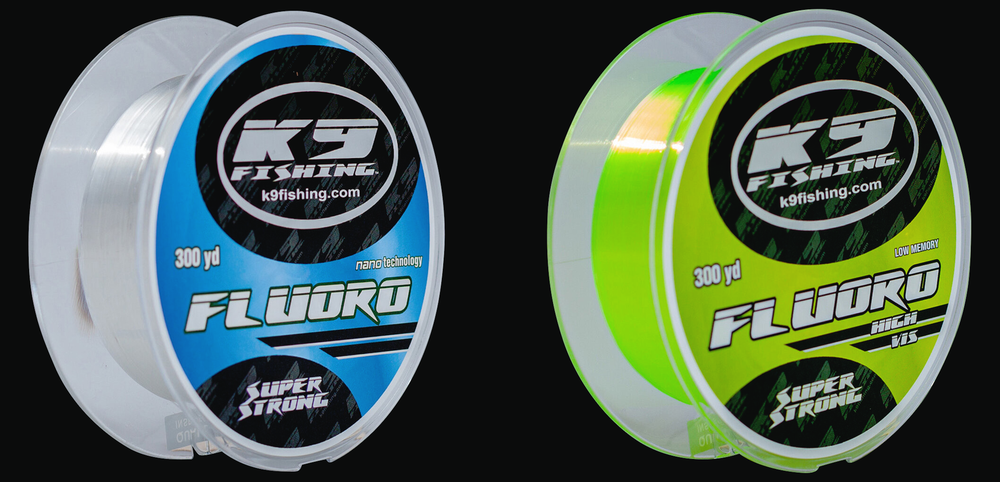

FLUORO
BEST SELLERConstruction
FLUOROCARBON BLEND
Test range
4 – 50 LB
Diameter
0.165 – 0.450 MM
Spools
300 · 550 · 1400 · 2000 YD
Colors
2 COLORS
Not 100% fluorocarbon by design: the Original K9 Fluoro keeps a bit of stretch on the hookset, giving the fish that extra moment to take the bait fully. Paired with outstanding strength and abrasion resistance, it is a line you can fish all season on spinning or casting gear.
Clear for stealth, or Hi-Vis chartreuse that glows under blacklight for line-watching day and night. Ideal for most techniques, especially moving baits.
Best for
CRAPPIE
MOVING BAITS
FLIPPING
NIGHT / UV
Crappie & panfish pickHi-Vis or Clear in 4–6 lb — our most popular panfish line, alongside Crappie Braid. Want 100% fluorocarbon? See Pro100.
| LB TEST | DIAM. | 300YD CL |
550YD CL |
1400YD CL |
2000YD CL |
300YD HV |
550YD HV |
2000YD HV |
|---|---|---|---|---|---|---|---|---|
| 4 LB | 0.165 mm | |||||||
| 6 LB | 0.203 mm | |||||||
| 8 LB | 0.234 mm | |||||||
| 10 LB | 0.260 mm | |||||||
| 12 LB | 0.286 mm | |||||||
| 14 LB | 0.331 mm | |||||||
| 17 LB | 0.370 mm | |||||||
| 20 LB | 0.405 mm | |||||||
| 25 LB | 0.450 mm | |||||||
| 30 LB | 0.370 mm | |||||||
| 40 LB | 0.405 mm | |||||||
| 50 LB | 0.450 mm |